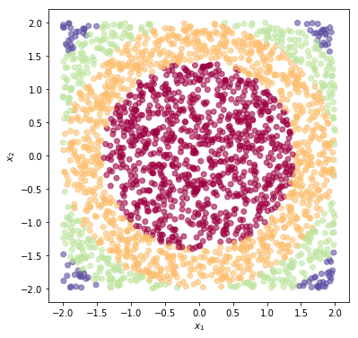
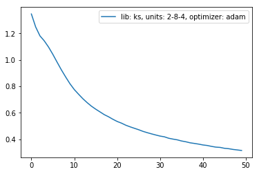
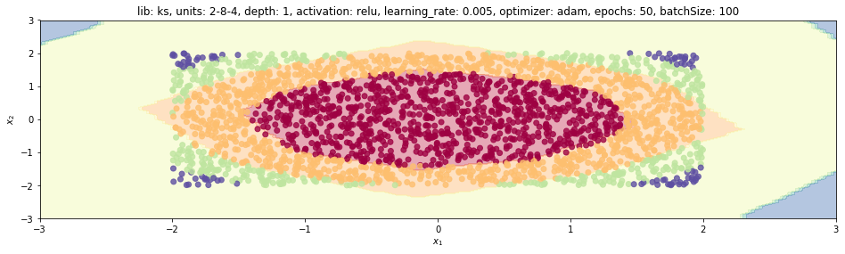
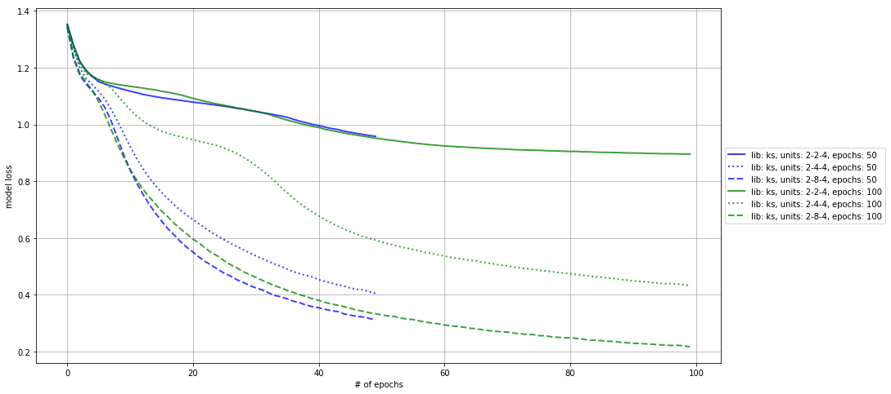
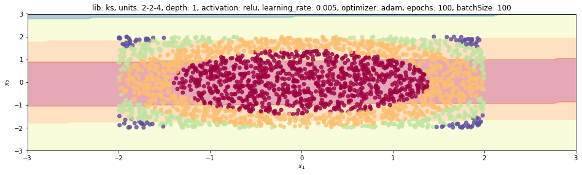
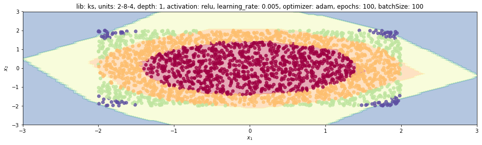

1. Introduction
This post belongs to a new series of posts related to a huge and popular topic in machine learning: fully connected neural networks.
The general series scope is three-fold:
- visualize the model features and characteristics with schematic pictures and charts
- learn to implement the model with different levels of abstraction, given by the framework used
- have some fun with one of the hottest topics right now!
In this new post, we are going to analyze the hyper-parameter space, which is referred to as meta-learning.
We learn how to use our trainFCNN class that has been described and used in many previous posts.
We follow these steps:
- meta-learning concept
- train a fully connected neural network for different settings
- compare the loss history for each case
- visualize the model response space for some cases
The whole code to create a synthetic dataset and learn a neural network model with any of the four libraries mentioned above is wrapped into a Python class, trainFCNN(), and can be found in my Github repo.
2. What does meta-learning mean
This post wants to go through some steps that are required to make the meta-learning process clean, compact and neat. It helps both developers to keep control over the investigation and readers or whoever is going to benefit from the analysis itself afterwards.
Meta-learning refers to the optimization of the system hyper-parameters (HP). As one might find out by reading many research papers, the final performance of a given model is strongly affected by the HP choice. It is very often a common practice using a bunch of different models altogether to generate the output. The final model is called ensemble model, as explained here.
Learning is often referred to as a process that changes the model parameters to minimize the model loss in a differentiable way. That’s why the optimizer is a method derived from the gradient-descent family.
Now, let’s come back to the main topic of this post: exploring what impact a specific HP of a combination of them might have on the model performance and behaviour. Ready? Let’s dive in!
In real-world applications, researchers and engineers use specific techniques and tools to seek the optimal set of HPs. One clear but powerful method is the grid-search from Sklearn, GridSearchCV.
However, this post’s scope is to illustrate how the model loss evolves over epochs for different settings, rather than merely seeking for the final set of parameters.
As a data scientist, it is very useful to gain knowledge and understanding of the actual behaviour of the model to certain settings.
It might also very efficient to explore a bit the domain we are playing with since a brute force search of many parameters exponentially explodes.
If we select M different values for each of the N HPs, we need to train the model $M^N$ times.
3. How each hyperparameter affects the model?
Here we define the list of HPs that are usually responsible to have an impact on the model performance:
- The number of neurons in hidden layer
j, which we specify as an integer atjindex of thedimsattribute. - The number of hidden layers, which is the
dimslength. - Type of optimization, which could be any of stochastic gradient descent
sgd, Adamadam, RMSProprmspropor AdamGradadagrad. - Learning rate.
- Activation function, which could be any of
sigmoid,reluortanh. - The number of epochs.
- Batch size.
The final step would be to compare different neural-network libraries each other, but lib is quite an attribute rather than a hyperparameter in that case.
Code-wise, we treat this actual attribute and every HP as attributes of a Pythonic class.
Since any attribute is defined within the train method, it is enough to define an instance of the trainFCNN class and refer to it as many times as the combination of a set of HPs’ values.
By default, after the training process is completed, its settings are saved into a descriptions dictionary, where each HP and its corresponding value are stored as key/value pair.
However, when we visualize the model loss trends to varying of two HPs, we want the figure legend to report what pertains to the current analysis only.
We need to extract those keys only from the dictionary and join into a description string.
4. Model performance
We create the tnn instance for the circles dataset and visualize it with plotPoints.
tnn = trainFCNN(nb_pnt=2500, dataset='circles')
tnn.plotPoints()

We train a simple model (one hidden layer with 2 neurons only) using Keras library, for a few epochs.
tnn.train(nb_epochs=50, dims=[8], activation='relu', lr=.005, lib='ks', display=False)
We display this case description wrt the units, optimizer and lib keys only, the model loss history and the model prediction.
As expected, the loss is high and the final prediction is poor.
descr = ', '.join(['{}: {}'.format(kk, vv) for kk, vv in tnn.descrs.items() if kk in ['units', 'optimizer', 'lib']])
print(descr)
lib: ks, units: 2-8-4, optimizer: adam
plt.plot(tnn.lossHistory, label=descr)
plt.legend()
<matplotlib.legend.Legend at 0x24c28069eb8>

tnn.plotModelEstimate(figsize=(16, 9))

5. Let’s visualize what meta-learning means
We want to see the mutual impact of two hyperparameters, namely the number of epochs nb_epochs and the number of hidden layer neurons dims, on final loss and plot the final prediction for the worst and best cases.
We create a cartesian product between two lists of values for each HP and iterate through each case to get different trained models.
hp1s = [50, 100]
hp2s = [2, 4, 8]
Nhp2 = len(hp2s)
mdls = []
for hp1, hp2 in itertools.product(hp1s, hp2s):
#tf.reset_default_graph()
tnn.train(nb_epochs=hp1, dims=[hp2], activation='relu', lib='ks')
mdls.append(deepcopy(tnn))
We visualize the model loss history for each case, where we differentiate different values of first HP, nb_epochs, with colours and of second HP, dims, with markers.
Since the iterator kk ranges through the cartesian product, we can retrieve the corresponding index for colour (HP1) and marker (HP2) by means of the two Python operations kk // Nhp2 and kk % Nhp2, respectively.
colors = ['b', 'g', 'r', 'c', 'k']
markers = ['solid', 'dotted', 'dashed', 'dashdot']
descrKeys = ['units', 'epochs', 'lib']
plt.figure(figsize=(15, 8))
for kk, tnn in enumerate(mdls):
col, mark = colors[kk // Nhp2], markers[kk % Nhp2]
plt.plot(tnn.lossHistory, label=tnn.mdlDescription(descrKeys), lw=2, ls=mark, color=col, alpha=.75)
plt.grid()
plt.legend(loc='center left', bbox_to_anchor=(1, 0.5))
plt.xlabel('# of epochs')
plt.ylabel('model loss')
plt.show()

We can appreciate how loss trends could change despite the model being the same, due to the stochastic nature of the default optimizer, stochastic gradient descent. Compare each pair of lines with the same marker, they share the same model architecture. The loss is different even after the same number of epochs.
It is instead not surprising at all that increasing the number of neurons improves the model performance.
Let’s plot the model prediction for two extreme cases (fourth and last ones).
mdls[3].plotModelEstimate(figsize=(16, 9))

mdls[-1].plotModelEstimate(figsize=(16, 9))
